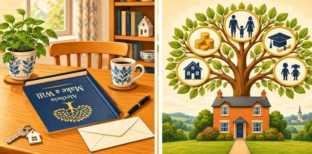

Make a Will
One question at a time. Your family, your choices, your legacy.

Version 0.1 · England and Wales
Review tool, not a legally valid will. No information is sent or saved. Downloaded worksheets are unencrypted. Never enter passwords, PINs or full account numbers. Complex arrangements need independent advice.